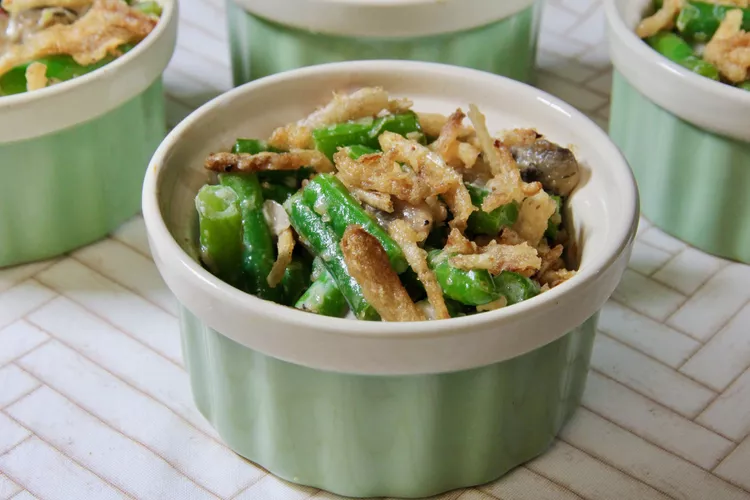

Individual Green Bean Casseroles

Description
Give classic green bean casserole a new spin by booting the canned mushroom soup.
Expect fresh green beans cooked to tender-crisp perfection in a delicious, homemade sauce,
topped with crunchy onions and served as mini casseroles.
Ingredients
- 1 pound fresh green beans, trimmed and cut into 1 1/2-inch pieces
- cooking spray
- 2 tablespoons unsalted butter
- 1 cup sliced fresh mushrooms
- 1 medium shallot, thinly sliced
- 1 clove garlic, minced
- 1 tablespoon all-purpose flour
- ½ cup chicken stock
- 1 teaspoon low-sodium soy sauce
- 1 teaspoon Dijon mustard
- ½ teaspoon dried thyme
- ½ cup half-and-half
- salt and ground black pepper to taste
- 1 strip crispy cooked bacon, crumbled
- ½ cup French-fried onions (such as French's®)
Steaps
- Bring a large pot of lightly-salted water to a rolling boil. Add beans and cook until just tender, about 5 minutes. (The beans will not soften too much more during baking, so if you want them softer, cook to your preference.)
- Drain beans, run under cold water, and place in a bowl of ice water to stop the cooking. When beans are chilled, drain and set aside.
- Meanwhile, preheat the oven to 350 degrees F (175 degrees C). Spray the inside of 4 ramekins with cooking spray.
- Melt butter in a medium skillet over medium heat. Add mushrooms and shallot and cook until they start to brown, 2 to 4 minutes. Add garlic and cook until fragrant, about 30 seconds.
- Sprinkle flour over the mushrooms, stirring well to combine. Gradually pour in chicken stock, soy sauce, Dijon, and thyme, stirring constantly; the mixture will be thick at this point. Stir in half-and-half, salt, and pepper until well combined. Reduce heat to low and simmer until flavors have melded and sauce has thickened, 3 to 5 minutes.
- Stir in green beans and bacon until well combined. Spoon into the prepared ramekins and top with French-fried onions.
- Bake in the preheated oven for 13 to 15 minutes. Serve immediately.